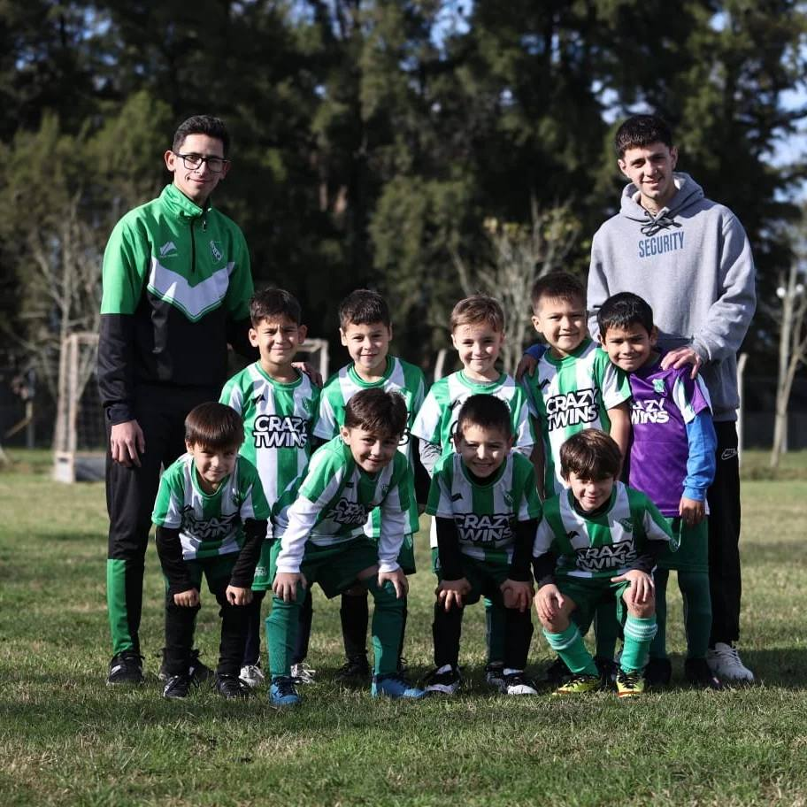

Actividades
Escuela de futbol
La escuelita de futbol, al mando del CT, Santiago Crosetti (DT)/ Ulises Lucena (AC). Embarcada por niños de 3-5 años de edad.. con la finalidad de que los pequeños, adapten los valores a la competencia sin perder el motivo de sonrisa
Inferiores
El semillero: "El objetivo es estar cerca de Boca y River y pelear con Lanús y Vélez el tercer lugar de las mejores inferiores de Argentina", le expresó a Olé el vicepresidente segundo del Bicho, Javier Pederzoli, ya que tienen que competir con una gran diferencia de dinero destinado a la captación de juveniles con respecto a los clubes grandes de Argentina.
Futbol mayor
En Giles un barrio está de fiesta. Villa Manchi consiguió un destacado logro el pasado domingo, que ya tiene su lugar en las páginas doradas del club. En su temporada debut en la Liga Mercedina se coronó campeón de la Segunda División para lograr así el ascenso a la categoría mayor. La última fecha de la temporada midió a la Villa con Jorge Newbery, el único equipo con chances matemáticas de arrebatarle el título a los de Giles. La victoria, el empate y hasta una derrota por la mínima coronaban a la institución local.
Profesores de nuestra institucion

Alexis Roldan
Cargo o descripción breve del Socio 1.
Santiago Crosetti
Prof. Escuelita de Futbol
Alejandro Aubain
Director Tecnico
Maxi Levo
Kinesiologo
Simon Domancich
Preparador Fisico
Mauro Rondon
Ayudante de campo